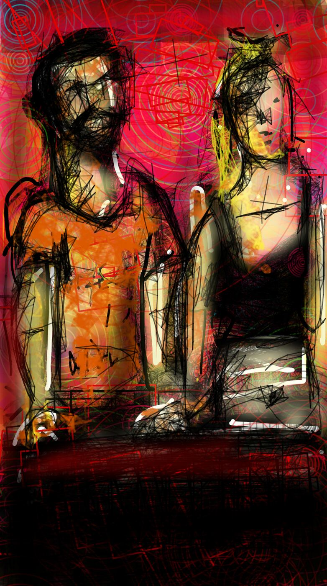

David Mirás
Entrega sus espejos al mundo para que los demás vean en ellos su propia realidad.
Pintura · Escultura · Dibujo digital · Performance


La obra
Amantes, cuerpos al sol, pasiones y desencuentros. Cualquier parecido con la realidad puede ser puro reflejo.




Mutabilidad
Un cadáver despierta y, con el sonido, se despoja de sus recuerdos. Performance de 42 minutos con la acción sonora de Natan Nexus.


Escultura · homenaje al pintor Ocaña
Ocaña en tránsito
Talla directa sobre grafito de alta densidad, pulido y bruñido con pincel en bronce. 320 cm de altura, 60 cm de diámetro, 600 kg.
Se creó en su taller Miras al otro lado, en Barcelona, donde también imparte talleres de pintura, dibujo y escultura.
Exposiciones
- yo · tú · nosotros · ellasInusual Project, Barcelona
- MutabilidadSala Freedonia, Barcelona
- Testimoni del conflictePoble Vell, Corbera d’Ebre
Mírate
Encargos, compra de obra, talleres y exposiciones.
© 2026 David Mirás · Barcelona · Instagram [@USUARIO]Aviso legal · Privacidad